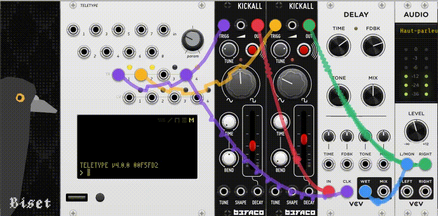

Biset Blank : un module VCVRack pour animer les performances de live coding
Publié le : 2024-08-02
Auteur : Raphaël Maurice Forment
Sébastien Huertas (gibbonJoyeux) est l'auteur de plusieurs modules pour l'environnement VCVRack. Ses modules permettent de live coder VCVRack par le biais d'un langage spécialisé inspiré de la syntaxe des expressions régulières : Biset Regex. Il est aussi l'auteur d'un module tracker et de nombreux utilitaires permettant de faire de VCV un écosystème plus pertinent pour l'écriture musicale ou pour l'improvisation. Il a dernièrement publié un module en apparence trompeur, Blank. Un module blank, dans le jargon propre aux synthétiseurs modulaires, est d'ordinaire un module utilisé en lieu et place d'un véritable module. Il permet de combler un vide, de ne pas laisser une partie d'un rack exposée à la poussière ou à la chute accidentelle des objets sur l'alimentation électrique. Il peut aussi être utilisé de manière créative pour décorer un synthétiseur, comme en témoigne ce magnifique pigeon.
Le Blank dont il est ici question modifie le comportement global de l'application et de son interface ! Une fois inséré dans un patch, chaque câble devient auscultable et s'anime. Il est possible d'aperçevoir la forme d'onde du signal passant au travers des câbles. Pour le public, cela permet de comprendre plus facilement le type de signaux utilisés et la nature des signaux qui transitent pour chaque connexion. Pour l'apprentissage ou la pédagogie, ce module remplace aisément l'utilisation d'un oscilloscope dédié. Passer la souris sur une connexion affiche aussi un oscilloscope dans une fenêtre popup. Le module est également relativement économe en ressources, ce qui est toujours un plus !

Ce module a initialement été conçu pour offrir un meilleur retour visuel au public lors des performances de live coding. Son utilité dépasse désormais ce seul contexte. Félicitations à gibbonJoyeux pour son travail sur l'écosystème VCVRack.